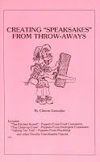

Novelty Puppet Constructions
6/27/2009
Question: Clinton, Jeff Dunham's character "Jose Jalapeno" is probably his most popular due to it's novelty and design. I have come up with some ideas for puppets that would have to be made with the a mechanism similar to Jose's. Do you know if any manuals or books that may teach a novice how to make such a "lever" type puppet. I would appreciate any advice or recommendation. Thanks, Ron
* * * * *
{kind=link}

Answer: In 1986 I presented a workshop at both the Vent Haven Convention and the FCM conference, demonstrating and explaining how I turned commercial products into novelty puppets. Cereal and soap containers, etc. For those workshops I printed a set of notes which I called "Creating 'Speaksakes' From Throw-Aways". There are various types of mouth designs shown, one or two of which might meet your needs. I still have a handful of the 20 page "Speaksakes" booklets. $5.00 PP. PayPal payment would be fastest. If you (or anyone reading this) would like to purchase a copy, send me a note via email: mahertalk@aol.com
Clinton
Ron Havens
Ron Havens